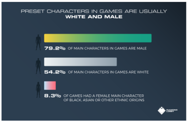
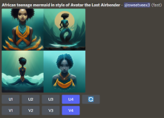
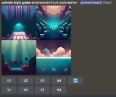
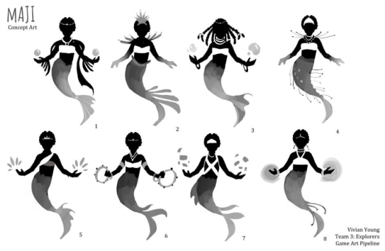
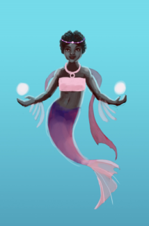
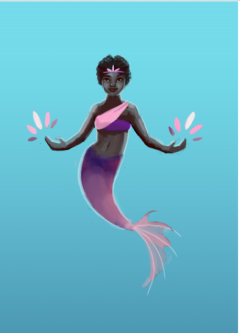
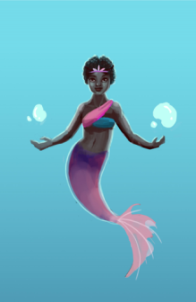
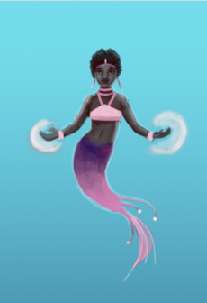
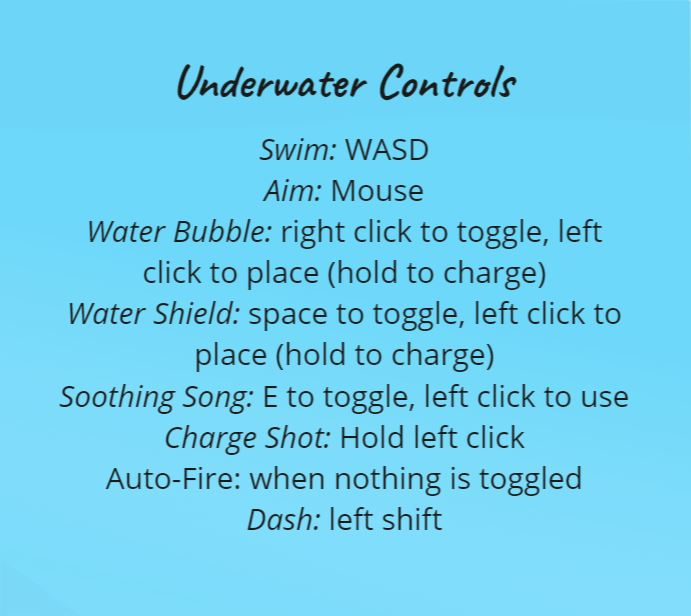

How might we use game design to help the youth feel represented and affirmed in their self worth?
In an effort to increase diversity in gaming, I partnered with programming students
at Howard University to create a game that reflected who we were collectively
through an innovative storyline.
Our solution was a 2D mermaid platformer that used water as a game mechanic.
My Role
Led as concept artist and co-led as game designer, collaborating with programmers and another artist.
Involved in every step of production pipeline, from ideation to final production in Unity.
I experimented with emerging technology by collaborating with the AI MidJourney art generator
to come up with ideas for character and environment design.
We drew inspiration from these ideas to create designs of our own.
Check out my speed painting below of our main character Maji!
Context
Studies show that there is a lack of racial and gender diversity in the gaming industry, which consists
predominantly of caucasian males. This is reflected in the products being designed. According to Diamond Lobby,
a gaming resource website:
Approximately 80% of main protagonists in gaming are male and 20% are female
Approximately 54% of main characters are Caucasian
Approximately 8% of games had a female main character or African American, Asian, or other ethnic origin

Story and Design Goals
Story: The Queen Mother and Immortal Protector has fallen ill from a mysterious
illness from the Land Above. Her people are now leaderless and don’t know what to do.
Maji Kibibi, which is Swahili for “Water Princess”, is the Queen Mother’s daughter and
princess of the Ocean. She is tasked with the responsibility of healing the fish in
the ocean and protecting her people from further harm.
Design Goal:Create a 2D platformer game where a female teenage African mermaid is
the main protagonist. We drew inspiration from the popular game Celeste for art and
story direction.
We used the Transformational Framework to apply in our design goals of identity, belief and society according to
the Transformational Framework.
Identity- Help player’s increase positive affirmation towards their sense of self.
Belief- Help players alter their perception of different
ethnicities and see more universal commonalities between groups of people.
Society- Help users feel more optimistic about the ability to treat each other
respectfully in society.
Ideation and Concept Art
Throughout our game design process, we used
Miro
to document our design process and strategy.
The Miro Board was used to organize and track tasks between the
Art and Programming side of the project.
We used the Discord Server to communicate with each other directly as a group
and as a place to share assets and troubleshoot problems together.
Ideation and Early Iterations
To adapt to emerging AI technology, we experimented with the Midjourney AI art generator
to find inspiration for our character and environment designs.
We wrote prompts that drew inspiration from shows and games we enjoy,
such as Celeste and Avatar the Last Airbender.
Key Takeaways from this Experiment:
After sharing these images with the rest of the team,
we chose a color palette and narrowed down on the protagonists’ look.
Short, natural Afro hair felt particularly relatable for my teammates
so this was incorporated into the final design.
Reflection of using AI as a collaborative tool: The AI results inspired us
to create something new. However, the results alone lacked cohesiveness and
the human touch needed to meet specific targets in our story.
The AI served more as an ideation tool for our team.


Based on feedback from the team, I painted silhouette and character design explorations of the main protagonist.
Teammates voted on which iteration of Maji they liked. Sample images below were painted in Adobe Photoshop CC.





Design and Playtesting
We presented a lo-fi prototype to guests from Rockstar Games, creators of Grand Theft Auto.
Our first prototype had an underwater and overwater level. They gave this feedback:
It may be good to combine the two areas into one for a more reasonable scope.
Better to focus on one level and making it really good than to spread too thin
having multiple levels.
Help users identify where the protagonist is in the game, using animation or other visual cues.
Based on Rockstar's feedback we made the following changes:
Reduced the scope of our game to focus on the underwater environment.
Adjusted the background so it is cooler in temperature and easier
to distinguish Maji in the foreground.
Focus on creating a cohesive gameplay where Maji is on a quest to heal poisoned fish.
She takes hits and damage but also has the power to use a laser beam and a defense bubble to heal the fish in
time.

Final Game
As we solidifed our designs into a playable game, our team moved continued
to build the world and refined the game interactions in Unity. See
a video of the gameplay and poster of the loading screen below.